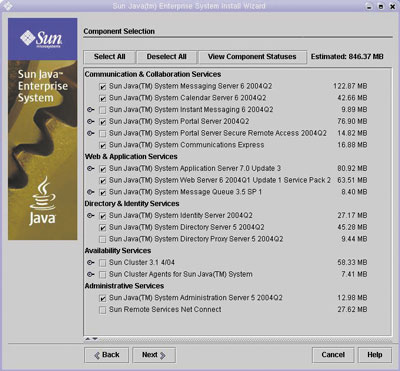
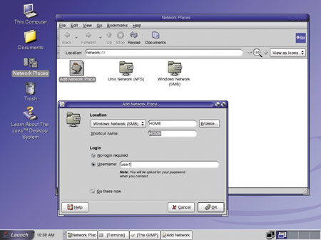
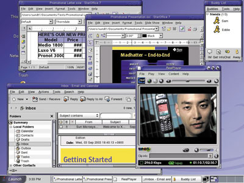

Андрей Ездаков
Любая корпоративная информационная система (ИС) представляет собой аппаратно-программно-коммуникационное решение, которое должно, во-первых, наилучшим образом организовать доступ пользователей к необходимым им сервисам и возможность их совместной работы; во-вторых, обеспечить нужный уровень информационной безопасности. В-третьих, при выборе этого решения следует разумно ограничить стоимость приобретения и владения системой, защитив в то же время сделанные ранее инвестиции.
Отнюдь не последнюю роль во всех трех аспектах играет базовое ПО, позволяющее развертывать все необходимые функции, в том числе и те, которые реализуют защиту информации. На мировом рынке такого рода решения предлагают несколько известных компаний, в числе которых и компания Sun Microsystems (http://www.sun.com), известная не только как производитель аппаратных решений, но и как один из ведущих поставщиков ПО. Сейчас компания предлагает комплексную систему уровня предприятия - Sun Java System, основу которого составляют два программных продукта, Sun Java Enterprise System и Sun Java Desktop System. Первый можно назвать серверным компонентом решения, а второй - клиентским.
Sun Java Enterprise System
Система Sun Java Enterprise System построена на основе открытых стандартов, в нее входит интегрированный набор популярных сетевых сервисов для предприятий, необходимых сегодня практически любой компании. Система основана на новом подходе к ПО для создания, модернизации и поддержки информационной инфраструктуры предприятий. Оно объединяет в себе Web-сервисы и приложения на Java, в результате чего значительно сокращается сложность ИТ-структуры компании и расходы на ее эксплуатацию.
Использование Sun Java Enterprise System позволяет заметно сэкономить на лицензионных выплатах и операционных расходах и упростить процедуру выбора, приобретения и использования необходимых программных средств. При покупке системы клиенты платят один лицензионный взнос за собственно ПО, поддержку, техническое обслуживание, консультации, тренинги и обучение. В результате обеспечивается дополнительная гибкость и возможность контроля за используемыми приложениями.
Сетевые сервисы
Реализуемые с помощью Sun Java Enterprise System сетевые сервисы уровня предприятия лежат посередине между традиционными функциями ОС, например, Solaris или Linux, и бизнес-приложениями. Они проектируются и развертываются для создания масштабируемой, совместимой, непрерывно работающей и защищенной ИТ-инфраструктуры.
Интегрированный набор основных сетевых сервисов в Sun Java Enterprise System включает сервисы сетевой идентификации, Web-сервисы, сервисы приложений, сервисы портала, сервисы связи и совместной работы, сервисы обеспечения непрерывности работы и сервисы безопасности (рис. 1). Эти сервисы позволяют расширить сферу защищенного доступа в сеть предприятия с уменьшением затрат времени и средств на развертывание; повысить прогнозируемость и надежность работы ИС (благодаря тому, что среда, в которой она развернута, обеспечивает непрерывность работы); обеспечить пользователям необходимые им функции доступа, связи и работы с транзакциями, единый доступ ко всем сервисам и приложениям, а также гарантировать защиту ресурсов и информации.
|  |
| Рис. 1. Настройка компонентов Sun Java Enterprise System.
|
Сервисы сетевой идентификации повышают уровень безопасности корпоративной информации, обеспечивая глобальное применение политик контроля доступа во всех подразделениях, приложениях и сервисах. Эти сервисы используют специальное хранилище для идентификационных профилей, привилегий доступа и информации о приложениях и сетевых ресурсах.
Web-сервисы и сервисы приложений служат для разработки и развертывания приложений, а также для управления ими на серверах, клиентских ПК и других устройствах ИС. Эти сервисы, созданные на базе Java 2 Enterprise Edition (J2EE), обеспечивают повторное использование кода приложений и совместную работу программистов.
Сервисы портала обеспечивают постоянный доступ пользователей к ресурсам ИС из любого места и функции персонализации, агрегации, безопасности, интеграции, мобильного доступа и поиска. Эта категория сервисов предоставляет мобильным сотрудникам, специалистам по анализу и обработке информации, партнерам, поставщикам и клиентам защищенный доступ к персональному корпоративному порталу. Эти сервисы также расширяют возможности портала, позволяя ему обслуживать сотни мобильных устройств и приложений, работающих в автономном режиме.
Сервисы связи и совместной работы обеспечивают защищенный обмен информацией между пользователями, ускоряя процедуру принятия решений и повышая общую производительность труда. Эти сервисы обеспечивают прием и передачу сообщений, совместную работу в режиме реального времени, ведение ежедневника и планирование в контексте рабочей среды пользователя.
Сервисы обеспечения непрерывности работы реализуют такой подход к управлению уровнем обслуживания приложений, в котором поддерживается прогнозируемость и гибкость используемого ПО. Эти сервисы используют запатентованную технологию Always-On для приложений и Web-сервисов, обеспечивающую качество их обслуживания и широкую масштабируемость. Технология Always-On подразумевает синхронную репликацию данных о состоянии сеанса работы приложения, благодаря чему эти данные становятся практически постоянно доступными пользователям и приложениям. При этом не требуется специальное аппаратное обеспечение или управление, как в случае традиционной реляционной базы данных.
Сервисы безопасности охватывают всю систему корпоративного ПО, поддерживая требуемый уровень надежности работы ИС. Эти сервисы обеспечивают однократную регистрацию в системе для доступа к сетевым ресурсам, защиту информации с использованием современных стандартов и надежные схемы аутентификации и контроля доступа. Кроме того, сервисы безопасности позволяют предоставить защищенный доступ к порталу предприятия удаленным и мобильным сотрудникам и деловым партнерам компании без дополнительных расходов на администрирование и техническое обслуживание, сопряженных с организацией виртуальных частных сетей (VPN).
Для защиты связи и совместной работы сервисов безопасности в Sun Java Enterprise System используется протокол SASL, который может применяться совместно с популярными клиентами POP и IMAP для доступа к SMTP-серверу с помощью пароля. Сервисы безопасности обеспечивают целостность связи благодаря использованию нескольких механизмов аутентификации и соединений SSL для обмена сообщениями. Кроме того, эти сервисы поддерживают защищенный удаленный доступ к порталам, благодаря чему удаленные пользователи могут получать информацию по требованию через обычный Web-браузер с помощью технологии VPN. И наконец, сервисы безопасности выполняют функции прокси-сервера для доступа к Интернету и службам сетевых каталогов.
Функции, стандарты и сопровождение
Система Sun Java Enterprise System имеет единую программную архитектуру и единый пользовательский интерфейс. Единая инфраструктура обеспечивает целостность данных, защищенную идентификацию пользователей и удобство добавления новых приложений с поддержкой идентификации. Однократная регистрация в системе для всех сервисов делает работу более удобной для пользователя и значительно сокращает расходы на поддержку. Единая установка сокращает время развертывания решения и стоимость ее технического обслуживания. Функции совместимости упрощают работу пользователей в стандартных средах. Сюда входит поддержка порталов и сетевой идентификации для серверов приложений Sun, IBM и BEA; технологии plug-and-play для основанных на стандартах портлетов, клиентов для работы с электронной почтой и ежедневником Outlook и Evolution без дополнительных расходов.
Система обеспечивает пользователю единый интерфейс взаимодействия с ИС. Пользовательские интерфейсы для компаний, потребителей и администраторов соответствуют единому набору базовых стандартов. Единая концепция работы пользователя предполагает, что ему предоставляются базовый набор документов для всех компонентов программной системы; графический пользовательский интерфейс со справочной информацией, переведенной на восемь мировых языков; новые функции для людей с ограниченными физическими возможностями; соответствие стилям и рекомендациям для удобства работы во всех пользовательских интерфейсах, включая интерфейс командной строки, справочный интерфейс, графический пользовательский интерфейс и т. д.
Sun Java Enterprise System была успешно протестирована на базе стандартных моделей использования и развертывания в средах, имитирующих реальные. При тестировании системы использовались такие схемы развертывания, которые обеспечивают возможность ее последующей установки "под ключ". Полученная информация для настройки и оптимизации развертывания системы включает данные по отладке; рекомендации по методам установки и по архитектуре решений, соответствующей конкретным потребностям пользователей, а также стандартные образцы архитектуры решений; результаты тестов производительности для инфраструктур разного масштаба.
Компания Sun предлагает консультационные услуги и услуги по обучению персонала, помогающие проектировать, развертывать и контролировать среду Sun Java Enterprise System в рамках ИС. Сервисное подразделение Sun Services занимается проектированием, внедрением и управлением системами и имеет методологии, позволяющие реализовать все преимущества ПО Sun Java Enterprise System. Кроме того, сервисное подразделение компании предлагает клиентам техническую поддержку, техническое обслуживание, услуги по установке, консультационные услуги и услуги по обучению для плавного перехода на Sun Java Enterprise System и интеграции системы на предприятии.
Корпоративным клиентам предоставляются различные уровни обслуживания в рамках системы Sun Java Enterprise System, в зависимости от числа приобретаемых лицензий на этот продукт. Нужно отметить, что любая лицензия на систему Sun Java Enterprise System включает услуги технической поддержки и технического обслуживания ПО с предоставлением доступа ко всем обновлениям. За дополнительную плату (по числу сотрудников) клиенты могут приобрести привилегированные услуги технической поддержки Sun, включая круглосуточную техническую поддержку через Интернет и по телефону и переадресацию вызовов в срочных случаях.
Компоненты Sun Java Enterprise SystemВ современную версию системы Sun Java Enterprise System входят следующие компоненты:
В следующие версии системы планируется включить еще ряд дополнительных компонентов. Система Sun Java Enterprise System и ее компоненты соответствуют международным стандартам (исключения фиксируются в замечаниях, которые можно найти на сайте http://docs.sun.com). Аппаратные и программные требования системы (объем оперативной памяти, свободное пространство на диске, предустановленное ПО) зависят от того, какие компоненты выбраны для установки. Для функционирования системы необходима одна из следующих ОС: Solaris версии 8 для платформы SPARC; Solaris версии 9 и выше для платформы SPARC или x86; Red Hat Enterprise Linux AS 2.1, а также наличие Java 2 Standard Edition (J2SE) 1.4.1.x. Система Sun Java Enterprise System локализована для следующих языков: английского, французского, немецкого, испанского, корейского, японского, китайского (упрощенный и традиционный вариант).
|
Sun Java Desktop System
Система Sun Java Desktop System - это полная альтернативная среда рабочего стола как для отдельных пользователей, работающих в гетерогенных сетях, так и для компаний, предпочитающих использовать единую клиентскую среду. В систему входят как программы для офисной работы, так и средства управления и развертывания приложений для системных администраторов. Она полностью совместима с ПО Sun Java Enterprise System и представляет собой удобное, продуктивное и недорогое универсальное решение для настольных ПК.
При создании этого экономичного решения корпорация Sun использовала последние разработки на базе открытого программного кода. В Sun Java Desktop System пользователям предоставляется набор интегрированных программных приложений, в основном на базе открытых стандартов. Здесь имеется интерфейс рабочего стола Gnome, офисный пакет StarOffice 7, интегрированные функции ежедневника и электронной почты, Web-браузер, программы для обмена сообщениями, Adobe Acrobat Reader, Macromedia Flash Player, Real-Networks RealPlayer и средства разработки на базе Java. Кроме того, в Sun Java Desktop System входит ОС Linux.
В Sun Java Desktop System имеется один из самых полных наборов инструментальных средств, упрощающих системным администраторам управление распределенными клиентскими системами. Программа Sun Control Station 2.1 повышает производительность труда администраторов благодаря ускорению настройки рабочего стола и возможности одновременного развертывания решения на нескольких системах. Java Desktop System Configuration Manager обеспечивает функциональное управление правами доступа сотрудников и настройками политик доступа.
Решения, входящие в состав Sun Java Desktop System, имеют единый удобный графический интерфейс. Хотя этот интерфейс и упрощен, в нем используются обычные темы рабочего стола и стандартная схема размещения компонентов менеджера файлов, так что пользователи могут сразу начать продуктивную работу с ним без дополнительного обучения. Кроме того, система Sun Java Desktop System обеспечивает высокий уровень совместимости, позволяя работать с данными, файлами и принтерами ОС Microsoft Windows.
Решение проблемы безопасности
Система Sun Java Desktop System изначально разрабатывалась как безопасная платформа, одновременно использующая модель безопасности Java и защищенную инфраструктуру ОС Linux. Инфраструктура безопасности Java для Java-апплетов и приложений обеспечивает защиту от заражения вирусами файлов на компьютере. Кроме того, в Java Desktop System для целей безопасности реализованы поддержка однократной регистрации в системе (SSO) с технологией Java Card и интеграция Java System Access Manager (прежнее название Java System Identity Server).
ОС Linux также имеет собственные встроенные средства защиты от вирусов, червей и изменения системных файлов пользователями, не имеющими на то полномочий. Благодаря этим средствам она менее уязвима, а если проблемы с безопасностью и возникают, то открытая архитектура этой ОС позволит устранить их быстрее и проще.
Для тех, кто готов собственными силами расширять возможности системы, строить на ее основе дополнительные приложения, в том числе и для повышения уровня информационной безопасности, в Sun Java Desktop System полностью интегрирована последняя версия среды JRE Java 2 Platform Standard Edition. Эта среда включает все необходимые функции, в том числе новый графический интерфейс приложений Java, похожий на Linux GTK+, благодаря которому приложения Java интегрируются с рабочим столом; возможность отладки производительности; автоматическое обновление; модель безопасности Java; возможность запуска десятков тысяч апплетов и приложений Java и многое другое.
Следует отметить, что теперь средства разработки для Java входят в состав Sun Java Desktop System, позволяя настраивать приложения рабочего стола и Web-сервисы по желанию пользователя. Интуитивно понятная многофункциональная интегрированная среда разработки Java Studio Standard 5 (обновление 1) для платформы Java включает богатый набор функциональных возможностей. Кроме того, интегрированная среда разработки NetBeans IDE 3.6 позволяет развертывать и отлаживать Web-приложения на платформах Apache Tomcat 5 и Java System Application Server Platform Edition 8.
Функциональность
Интегрированное и отлаженное клиентское решение Sun Java Desktop System предоставляет пользователям единый интерфейс работы с каталогами, файлами и сетевыми компьютерами. С его помощью легко запускать файлы, вложенные в письма электронной почты, размещенные на Web-страницах и находящиеся в менеджере файлов. Приложения для рабочего стола тесно интегрированы друг с другом и поддерживают копирование/вставку/перенос текста, изображений и других элементов между приложениями.
Система проста в изучении и удобна в использовании, особенно для тех, кто привык к Windows, поскольку в Sun Java Desktop System реализованы знакомые темы рабочего стола для управления файлами и настройки конфигурации, стандартные комбинации "горячих" клавиш, прямой доступ к файлам и серверам через директории Documents и Network Places, а доступ к сетевым компьютерам традиционно организован из единой директории Network Places (рис. 2). Кроме того, в системе реализован универсальный выбор принтера из всех доступных сетевых принтеров, включая устройства сетей Windows.
|  |
| Рис. 2. Настройка сетевого взаимодействия.
|
Полнофункциональный набор программных приложений для клиентских ПК в Sun Java Desktop System включает широкий ассортимент средств для повышения продуктивности работы, в том числе офисные приложения, Web-браузер, клиент электронной почты, органайзер, программу обмена сообщениями, программу для управления проектами, графический редактор и приложения для видеоконференц-связи (рис. 3). В системе реализована и поддержка мультимедиа-средств: проигрывателей аудио- и видеофайлов, программы звукозаписи, проигрывателя компакт-дисков и Java Media Player с возможностью воспроизведения файлов MP3. Кроме того, полностью поддерживается технология plug-and-play, которая позволяет подключать USB-совместимые устройства во время работы компьютера в горячем режиме.
|  |
| Рис. 3. "Рабочий стол" современного человека.
|
Система предоставляет и широкие возможности администрирования ИС. Администратор может организовать объединение нескольких компьютеров в единый вычислительный ресурс, что повышает гибкость системы; централизованно управлять ПО, включая его установку, добавление исправлений и обновлений; проводить удаленное развертывание готовых образов ПО, что позволяет одновременно устанавливать решение на большом количестве компьютеров; определять группы пользователей и политики для установки прав доступа и необходимых настроек; просматривать рабочий стол пользователя и работать с ним, чтобы помочь пользователю в работе или устранить неисправность.
Нужно отметить, что покупатели как однопользовательских, так и многопользовательских лицензий Sun Java Desktop System (по схеме "на каждый компьютер" или "на каждого сотрудника"), включающих как серверные, так и клиентские компоненты, имеют право на бесплатное получение всех исправлений и обновлений клиентского и серверного ПО в течение года с момента покупки.
Система Sun Java Desktop System - это недорогое решение, совместимое с сотнями других приложений с открытым исходным кодом (напомним, что в комплект поставки, помимо прочего, входит набор офисных приложений StarOffice 7). И наконец, компании смогут сэкономить значительные средства благодаря тому, что увеличится срок использования ПК, в том числе устаревших конфигураций, поскольку аппаратные требования системы невысоки. Минимальная конфигурация рабочего места, на которой поддерживается работа системы, - это процессор Pentium II с тактовой частотой не ниже 266 МГц, ОЗУ объемом от 128 Мбайт, не менее 4 Гбайт свободного пространства на диске и видеорежим с разрешением 800x600.
Решения Sun у операторов связиИзвестный оператор связи и Интернет-провайдер компания "Зебра Телеком" (http://www.zebratelecom.ru) использует аппаратно-программные комплексы Sun Microsystems под управлением OС Solaris. По мнению специалистов компании, это одна из наиболее современных версий Unix-систем, оптимизированных для работы квалифицированных системных администраторов и полностью реализующих весь потенциал, заложенный в серверные системы Sun. Поэтому, несмотря на серьезные временные и финансовые затраты, которых требует развертывание подобных решений, в том числе и дорогостоящая подготовка системного администратора, компания использует такую базу для работы своей биллинговой системы (как известно, биллинг предъявляет самые высокие требования к надежности как оборудования, так и системного ПО). Высокая надежность и масштабируемость вычислительной техники Sun, операционной системы Solaris и иных программных решений компании сделали их популярными в телекоммуникационном секторе, где надежность элементов ИТ-инфраструктуры, живучесть и безотказность их работы должны находиться на уровне, стандартном для работы сетей связи, - 24 часа в сутки, 365 дней в году. Поэтому компания "Зебра Телеком", масштабируя серверную инфраструктуру биллинга, всегда проводит предварительное тестирование оборудования и программ по разработанным сотрудниками компании специальным методикам, создающим определенные сценарии нагрузки. Высокие показатели надежности и производительности биллинговой системы на основе программно-аппаратной платформы от Sun Microsystems позволяют "Зебра Телеком" справляться с растущим потоком транзакций, развивая свой бизнес. Компания также в состоянии без задержки обрабатывать звонки во время кратковременных пиковых нагрузок. Разнообразие услуг, предоставляемых "Зебра Телеком" (это IP-телефония и доступ в Интернет по предоплаченным картам, переговорные пункты, Интернет-кафе, корпоративные PIN-коды, интегрированные услуги VoIP и передачи данных в сетях VPN, обмен трафиком с региональными операторами), и поддержка различных маркетинговых программ усложняют систему биллинга и повышают нагрузку на соответствующее оборудование. Опыт "Зебра Телеком" показал, что платформа Sun не только выдерживает эти нагрузки, но и создает резерв производительности, необходимый для роста компании. |
Заключение
Sun Java System представляет собой эффективное и недорогое комплексное решение для создания программной среды корпоративной ИС. Решение включает клиентскую и серверную части и позволяет реализовать набор приложений и услуг, необходимых пользователям на их рабочих местах. В создаваемых на базе Sun Java System ИС могут продуктивно функционировать как стандартные офисные приложения и Web-сервисы, так и специально настраиваемые или разрабатываемые программы, учитывающие специфику деятельности компании.
Специальные средства Sun Java System позволяют поддерживать политику информационной безопасности на уровне как приложений, так и ОС. Невысокие аппаратные требования системы и разумная политика компании Sun в области лицензирования позволяют строить на базе этой системы недорогие решения и обеспечивают защиту инвестиций в развитие информационной инфраструктуры предприятия.
Автор благодарит менеджера по маркетинговым коммуникациям Екатерину Горон и других сотрудников российского представительства Sun Microsystems за помощь при подготовке этого материала.